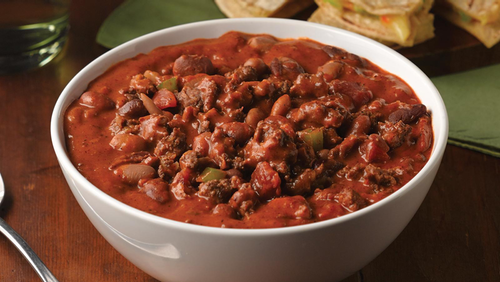
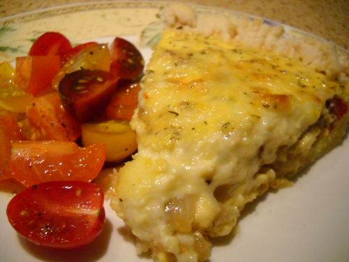

BBQ Pork Ribs

Beef Bourguignon

Butter Chicken

Chicken Cordon Bleu

Chicken Pot Pie

Chicken Breasts with Caper Cream Sauce
Chili

Chole
Egg & Onion Pie

Garlic Prime Rib

Gnocchi

Kielbasa and Cabbage

Kofta Kebabs

Lemon Chicken with Mushroom Sauce

Orange Chicken

Ratatouille

Ricotta Meatballs

Roast Leg of Lamb with Rosemary

Scrambled Eggs

Shrimp with Sweet Potatoes and Bacon

Sloppy Joe Sandwiches

Stuffed Green Peppers